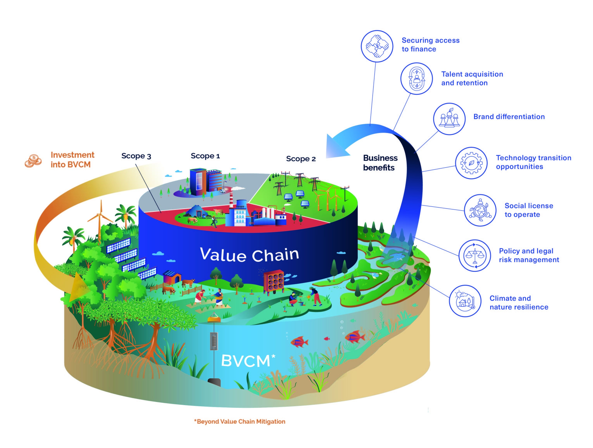
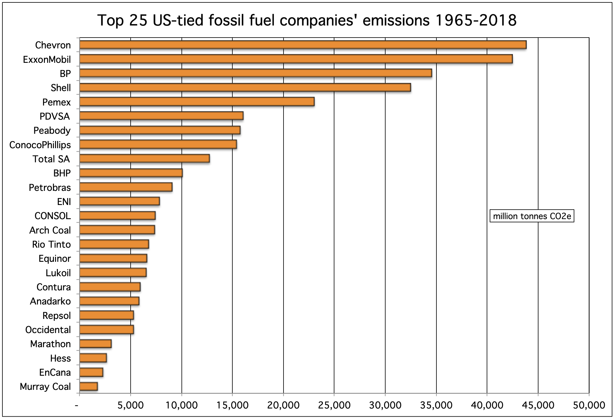
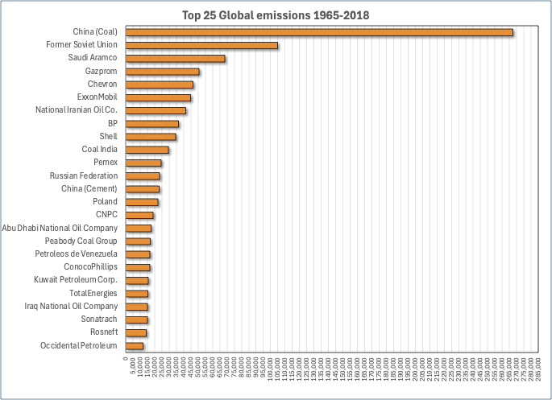

TL;DR:
We should eliminate carbon offsets entirely and focus accountability for net zero on Scope 1 emissions for publicly traded companies. Current methods lead to double counting of emissions and blame shifting. Instead of non-profits, a government or independent auditing agency should be empowered: "Eco-grifters" emphasize the role of energy companies in emissions while ignoring the role of consumer choices and other industries.
This is the second installment about the unavoidable conflict between engineering and economic net zero. I’m not alone in voicing concerns. On July 2, 80 non-profit organizations released a joint letter entitled “Why carbon offsetting undermines climate targets.” Before you say, “Whoa! With that much moral outrage, there must be some bad shit going on!” let me highlight that every signatory on this letter is competing for donors—none of them fund anything other than “advocacy” or in this case, “opposition.” So, “non-profit” doesn’t mean money doesn’t matter: There’s still a financial undercurrent even if these organizations don’t contribute to the GDP.
On the other hand, six non-profits, primarily focusing on conservation, voiced approval of the shift1 based primarily on SBTi’s adoption of guidelines suggested by the Voluntary Carbon Market Integrity Initiative (VCMI). Given that most carbon offsets today (or, as SBTi calls them, Environmental Attribute Certificates) result in land conservation (=reverse carbon ransom), the split in advocacy isn’t surprising. The bottom line: It’s worth examining the decision makers and who finances their support to determine if there are conflicts of interest.
Here’s what the “press” (Bloomberg) says about the economics of the situation:
Ulrich Volz, professor of economics and director of the Centre for Sustainable Finance at SOAS University of London, said the SBTi incident highlights the risk that “certain philanthropies and financial institutions wield outsized influence in shaping the agendas of some think tanks, university research centers and other climate-focused bodies.”
SBTi’s two core funders are Bezos Earth Fund, which supports growing the offsets market, and the IKEA Foundation. Bloomberg Philanthropies, the philanthropic organization of Michael Bloomberg, founder and majority owner of Bloomberg LP, is a project-specific funder of SBTi.
A spokesperson for the IKEA foundation said it supports SBTi as an “independent institution.” Bezos Earth Fund did not respond to a request for comment.
BloombergNEF estimates the offsets market can grow from about $2 billion today to more than $1 trillion by 2050 if SBTi eases its rules. “There is a lot of money to be made in voluntary carbon markets, and there are powerful commercial interests to shape these markets,” Volz said.2
Well, now we’re talking some real money! But, if you consider the holoeconomic picture, money isn’t manufactured. It simply changes hands, so the impact of SBTi’s rules determines where the money ends up. Consequently, its decisions impact a whole lot of bottom lines.
Ironically, the Bloomberg News article’s author, Alastair Marsh, misinterprets Bloomberg NEF's market analysis. The $1T market number is from a very aggressive scenario that reflects a strict “removal” scenario, not SBTi’s proposal.
Under the removal scenario, the supply-demand balance would be much tighter as only offsets from projects that actually removed carbon from the atmosphere [direct air capture] would be allowed to count. Credits from avoided deforestation or clean energy projects would be eliminated. In this scenario, the market would be briefly undersupplied starting in 2037 because the technology to remove carbon, direct air capture (DAC), remains costly to be built at major scale. Carbon offset prices would soar above $250/ton with the annual market reaching nearly $1 trillion.3
This scenario more accurately reflects an engineering net zero mindset. I think it would pass muster with most scientists; I would add that how fast carbon is removed needs to be equal to how fast it’s released, but at least this scenario doesn’t expect Adam Smith’s Invisible Hand to violate physical laws. Plus, the valuation of carbon emissions is more realistic than that of voluntary markets. But it’ll be a drag on any corporation that needs to pay. To make the economic impact more visceral, consider your carbon footprint and Scope 1 emissions from gasoline for a moment. A dollar per ton of carbon emitted adds a penny per gallon of gas. Would you volunteer to add $2.50 per gallon to your fuel costs? Or would you blame politicians for the predicament and try to find a way around the added costs?
So, what are VCMI’s guidelines? As the name suggests, VCMI professes to add “integrity” to the voluntary carbon markets. However, prices in voluntary markets are a small fraction of those in mandatory markets, and both markets significantly underestimate the cost of clean-up. Even mandatory markets don’t work because governments aren’t obliged to use the proceeds to clean up the problem: Carbon markets decouple engineering and economic net zero.
VCMI claims to eschew “offsets” in favor of Beyond Value Chain Mitigation (BVCM). Here’s a published diagram:

As the name suggests, BVCM extends beyond Scope 3, boldly labeled “Value Chain” above. Based on the diagram, there are puzzles: For example, “Are there really solar and wind “investments” that fall outside Scope 2?” To my eye, it’s equivalent to ecological charity because it involves “investment” outside of the normal operations of the company, its suppliers, and customers. I’ve worked with several companies engaged in investment, and I can guarantee you that every single one seeks a return. If they don’t, then it’s charity. Incorporating BVCM adds needless complexity and leads me to question how far they’re willing to go into “shell corporations” to claim “net zero” in an audit-recalcitrant manner.
Who controls VCMI? SBTi and VCMI are non-profits. SBTi is registered in the UK but hasn’t presented its financials. I couldn’t find anything concrete about VCMI’s details, but their website lists a tech-heavy set of funders, and the two share Bezos Earth Fund as funders. So, let’s examine Bezos as an example.
There’s a direct connection to Bezos at VCMI through the auspices of one Kelley Kizzier. Her credentials raise personal concerns, having migrated from a prominent eco-grifter, the Environmental Defense Fund, but nothing indicates that she holds unusual influence. Indeed, managers at both SBTi and VCMI know where their funding comes from, and it could certainly be a mechanism by which Prof. Volz’s “outsized influence” could be wielded. It's impossible to prove a quid pro quo without public financials (and often with them). Nonetheless, Amazon would have a significant financial motive through an independent but related non-profit (Bezos Earth Fund) to reduce the cost of meeting their net zero obligation. It’s especially true because Scope 3 is a massive contributor to their emissions and is hard to control.
Let me make a modest suggestion based on math and reduced complexity: Eliminate Scopes 2 and 3 from any net zero calculation while mandating complete and transparent accounting for all Scope 1 emissions for publicly traded companies in the U. S. Eliminate carbon credits of any flavor. The reason is simple: Anything outside the direct control of the company results in blame-shifting and screws up the books by “double counting” emissions. Should some of these non-profits wish to roll up emissions along the entire value chain, they could do the math themselves to uncover companies outsourcing their emissions.
Here’s how the double counting happens: A simple example is that your carbon footprint when you drive your gasoline-powered car contributes to your Scope 1 emissions. However, it also contributes to the company's Scope 3 emissions. Indeed, some more aggressive blame shifters want all the blame placed on the energy supplier!
One example is the “Carbon Majors” dataset compiled by a non-profit “Climate Accountability Institute.” This organization feeds into press coverage with headlines like “Just 100 companies responsible for 71% of global emissions, study says”. In graphic form, this study claims that the most significant public contributors to emissions are:

I qualified this as the “public” contributors since the top 3 “emitters” are all state-owned energy companies in non-democratic states. Here’s what the global data says overall!

This ecogrifter has cherry-picked the data to emphasize their point of view. But energy companies are not solely responsible for emissions—it’s in their Scope 3! It’s also in Scope 1 of airlines and Scope 2 of Chinese manufacturing. Should all of them have to count the same carbon emissions?
Thank you for reading Healing the Earth with Technology. This post is public, so feel free to share it.